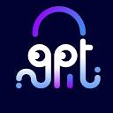

If you've built an agent that does research, you've probably watched it do something a little painful. It searches, opens five pages, skims them, searches again, opens five more. It gets there in the end, but it spends a lot of tokens and time on work that isn't really its job.
Exa Agent is built for that moment. Instead of giving your agent links to read, you give Exa the question and the shape of the answer you want. Exa does the searching and reading on its side, then sends the answer back with a link behind every field, so you can check where each fact came from.
Meet the Exa A2A Card. It's the public profile other agents read before they hire Exa: what Exa Agent is good at, how it differs from a search tool, where it's already listed, and how to connect. Any agent that speaks A2A can read it at exa.ai/.well-known/agent-card.json and send Exa a task, with no custom integration.
The search agent your agents can hire. Send a task, get back one structured answer with a source for every field.
Hire it for
AutoGPTexa.ai/.well-known/agent-card.jsonapi.exa.ai/a2a/v1x-api-keystreaming · pushGoogle was designed for a person who runs two or three searches and clicks the best link. Agents don't work that way: one research task can set off as many as 186 searches ⓘMeasured across agentic search traces.
arXiv 2602.17518. Google gave people links. Exa gives agents answers.
Why agent-to-agent, and why now
Until recently, an agent that needed something it couldn't do itself had one option: call a tool and do the rest of the work on its own. A2A changes that. It's the open standard Google started in 2025 so that agents from different companies can find each other, hand over a task and get a result back.
That matters because companies are starting to buy agents the way they buy software. Google's Gemini Enterprise Agent Marketplace lists agents from partners that any employee's Gemini agent can call, and Google asks those agents to speak A2A ⓘGoogle's guide to publishing agents in Gemini Enterprise and Google Cloud Marketplace.
Google Cloud. Google chose Exa. When it opened the Gemini Enterprise Agent Marketplace in April 2026, Exa Agent was a launch partner, and Google is also bringing Exa's search into Gemini grounding, now in private preview ⓘExa + Google Cloud, Apr 28, 2026: Exa Agent in the Gemini Enterprise Agent Marketplace ("No code, no separate procurement") and Grounding with Exa in private preview.
Exa blog. Any company's Gemini agent can hire Exa today.
Search is the job most agents hand off first. Almost every agent needs facts from the web, and very few want to read the web themselves. That's the opening for a search agent other agents can hire.
Search API or Exa Agent?
Both run on the same Exa index. The difference is who does the work. With the Search API, your agent gets the ingredients and cooks. With Exa Agent, it gets the finished dish.
Full comparison
| Exa Search API | Exa Agent | |
|---|---|---|
| What you send | A query | A task, plus the JSON shape you want back |
| What comes back | Ranked links with highlights or page text | One structured answer, with a source for every field |
| Who does the reading | Your agent: it searches again, reads, compares and formats | Exa: it runs the searches, reads and checks on its side |
| Speed | About a second per search | Seconds to minutes; you get a run ID to poll or stream |
| Price | Per search, from $4 per 1,000, plus your own tokens to read the results | Per task, $0.012 to $1.00, with a cap you set |
| Best for | Quick lookups inside a live turn: chat, voice, a fact check | Research with many steps, lists of companies or people, enriching rows |
| How other agents reach it | As a tool: API, SDK or MCP | As a peer: through its A2A Agent Card, from any A2A agent |
An MCP tool is something your agent uses and waits on. An A2A agent is someone your agent delegates to: it hands over the task, follows progress and gets the result back when it's ready. That's why research belongs with an agent.
What changes for your agent
Most searches aren't typed by people anymore. Exa says agents already make up most of the web's traffic by volume ⓘExa, Aug 28, 2026.
Dynamic Highlights. Yet most search tools still return what a person wants to see, a list of links and snippets, and the agent has to read all of it before it can use any of it.
You pay for every page your agent reads, twice. Once in tokens, and again in answer quality, because models get worse at finding the right fact as their context fills up. In one test, a focused 300-token input beat 113,000 tokens that held the same answer ⓘChroma tested 18 models.
Chroma.
Your agent has better things to do. A coding agent should be writing code, and a sales agent should be writing the email. Handing the research to Exa is like handing it to a colleague who comes back with a short summary and the sources attached.
How it works
query · outputSchemaeffort: minimal → ultrabudget.maxCostDollarsoutput.structured · groundingWhere Exa Agent runs today
Exa Agent only launched in June, but you can already reach it from a few places developers and IT teams use every day.
Admins add Exa Agent from the Agent Marketplace; staff run web research from their workspace. "No code, no separate procurement." ⓘExa + Google Cloud, Apr 28, 2026.
Exa blog
The agent_run tool in Exa MCP hands a research task to Exa Agent. ⓘExa changelog, Jul 1, 2026: "Exa Agent is now available within Exa MCP."
Changelog
An ExaAgent capability lets any Pydantic AI agent "delegate a research task to an asynchronous Exa agent run". ⓘPydantic AI docs.
Pydantic AI
A no-code Exa Agent block for deep research, list building and enrichment. ⓘAutoGPT integration docs.
AutoGPT
What teams are building on Exa
Exa Agent is new, but the search underneath it isn't. Here's how some teams already use Exa inside their own agents.
Breeze agents pull live people and company data into CRM work, and Monitors start a workflow when an account changes.
Reps ask for leads in plain language and get structured people and company records in monday CRM.
Read the case study
Its agents Alice and Julian find each prospect's buying signals before they write outreach.
One Deep search call, made only when outside context could change a review comment. P50 is 7.1 s.
Read the case study
Builds cohorts of similar companies, with contacts, in one enriched call.
Read the case study
When a stock moves, an agent fetches the news behind it and tells the user why.
Read the case study
Why Exa fits agent-to-agent
I tested four search APIs on 30 real agent tasks, three runs each, in an open benchmark you can rerun. When one agent hands work to another, the calling agent cares about a few things above all: are the results on topic, is the answer right, how much text comes back to pay for, and what a correct answer costs. Exa led on relevance and on accuracy under pressure, and stayed near the top on tokens and cost.
| What the calling agent needs | Exa | You.com | Tavily | Parallel |
|---|---|---|---|---|
| On-topic resultsShare of the top 5 that is relevant | 40% | 37% | 26% | 26% |
| Right answer under pressureInsurance: live catastrophe facts mid-call | 75% | 65% | 67% | 67% |
| Small hand-backTokens per query, top 5 with content | 8.4K | 41K | 15K | 1.7K |
| Cost of a correct answerSearch cost per correct answer | $0.012 | $0.026 | $0.016 | $0.008 |
| SpeedMedian response time | 1.1 s | 0.6 s | 1.9 s | 2.0 s |
Open benchmark, run Oct 8, 2026: 30 agent queries across GTM, insurance and finance, 3 runs each, every API on its default settings. The full scorecard, including empty results and accuracy by use case, is on the benchmark site.
Where to find it
Need only fast search inside a model call? Exa Search is the default web search on OpenRouter, and it's built into Vercel AI Gateway and Cloudflare ⓘExa Search, not the full agent.
OpenRouter · Vercel · Cloudflare.
How to call it
From any A2A agent: read the card, then send a task. You get back a task you can stream or poll, and the answer arrives as an artifact.
# 1. Find Exa
curl https://exa.ai/.well-known/agent-card.json
# 2. Hand it a task (A2A SendMessage)
curl -X POST https://api.exa.ai/a2a/v1 \
-H "x-api-key: $EXA_API_KEY" -H "Content-Type: application/json" \
-d '{
"jsonrpc": "2.0", "id": 1, "method": "SendMessage",
"params": { "message": {
"messageId": "msg-1", "role": "ROLE_USER",
"parts": [{ "text": "EU fintechs that launched an AI agent in 2026, with a source for each" }]
}}
}'pip install exa-py · also npm i exa-js
from exa_py import Exa
exa = Exa() # reads EXA_API_KEY
run = exa.agent.runs.create(
query="EU fintechs that launched an AI agent in 2026",
effort="medium",
output_schema={"type": "object", "properties": {"companies": {"type": "array"}}},
)
run = exa.agent.runs.poll_until_finished(run.id, poll_interval=4000)
print(run.output.structured) # your JSON
print(run.output.grounding) # a source for each fieldAlready on the OpenAI SDK? Point it at Exa and set model="exa-agent".
from openai import OpenAI
client = OpenAI(base_url="https://api.exa.ai", api_key=EXA_API_KEY)
response = client.responses.create(
model="exa-agent",
input="Top 5 AI startups founded in 2025, with funding",
reasoning={"effort": "medium"},
)
print(response.output_text)In Claude Code, Cursor or Codex, your agent gets an agent_run tool.
# Claude Code
claude plugin install exa@claude-plugins-official
# Codex
codex mcp add exa --url "https://mcp.exa.ai/mcp?tools=web_search_exa,agent_run"
# Cursor and other MCP clients (mcp.json)
{"mcpServers": {"exa": {"type": "streamable-http",
"url": "https://mcp.exa.ai/mcp?tools=web_search_exa,agent_run"}}}Any language. You get a run ID at once; poll GET /agent/runs/{id} or stream.
curl -X POST https://api.exa.ai/agent/runs \
-H "x-api-key: $EXA_API_KEY" -H "Content-Type: application/json" \
-d '{"query": "EU fintechs that launched an AI agent in 2026", "effort": "medium"}'Pricing is per task, so you know the cost up front: $0.012 for a quick lookup at minimal effort, up to $1.00 for a deep one at xhigh, and you can set a cap ⓘExa Agent pricing. auto and ultra are metered, with default caps of $5 and $20.
Agent API. The Agent API docs have the full reference, or grab an API key and try the snippet above.
Next time your agent opens its tenth browser tab, try handing the question to Exa instead.